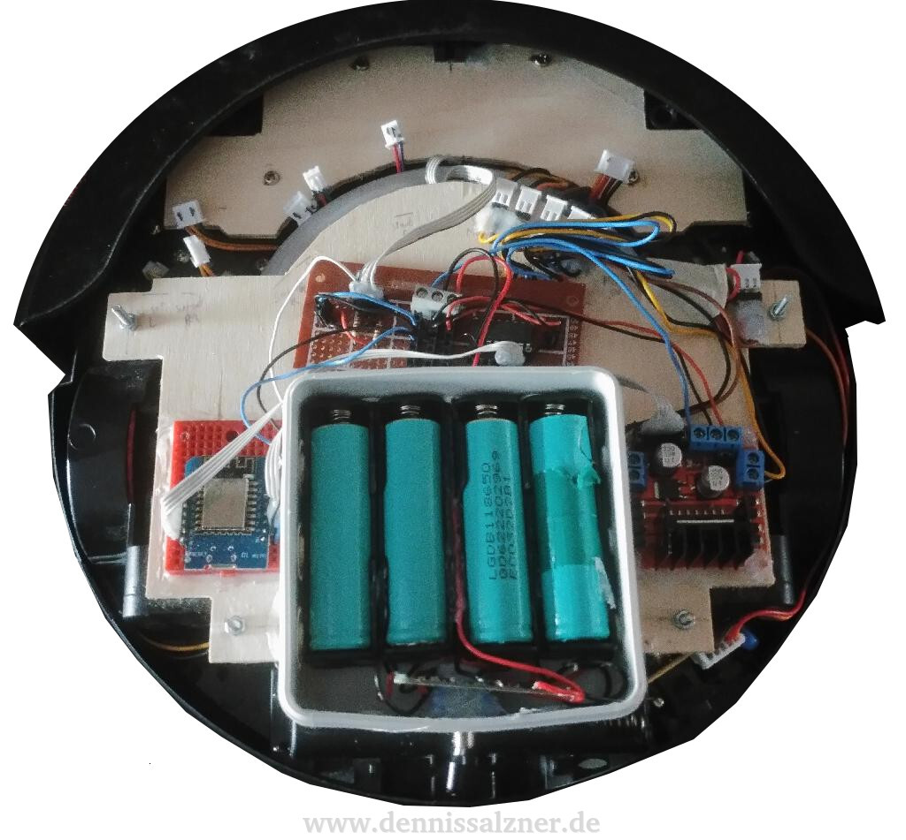
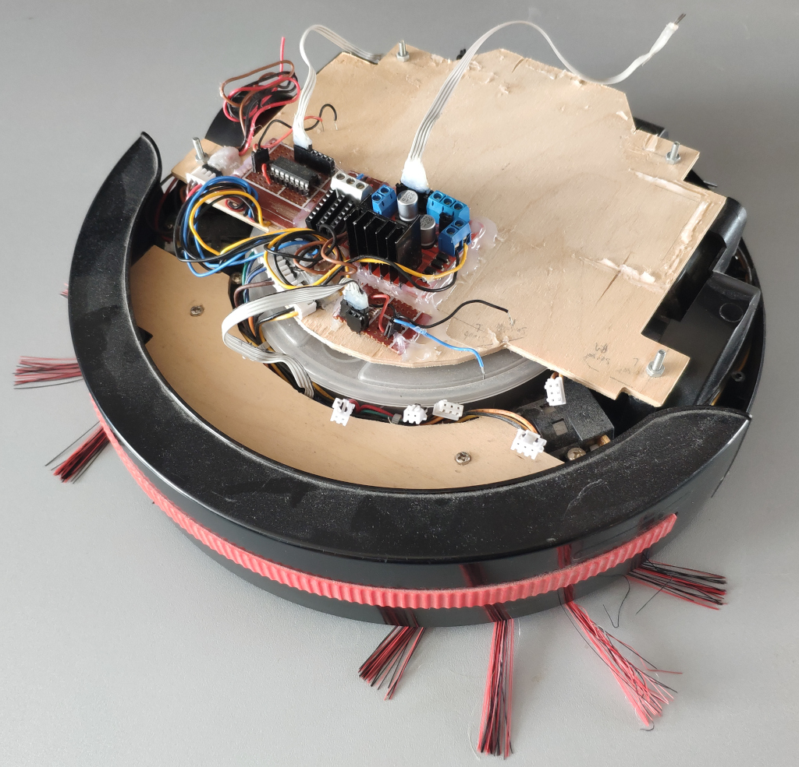
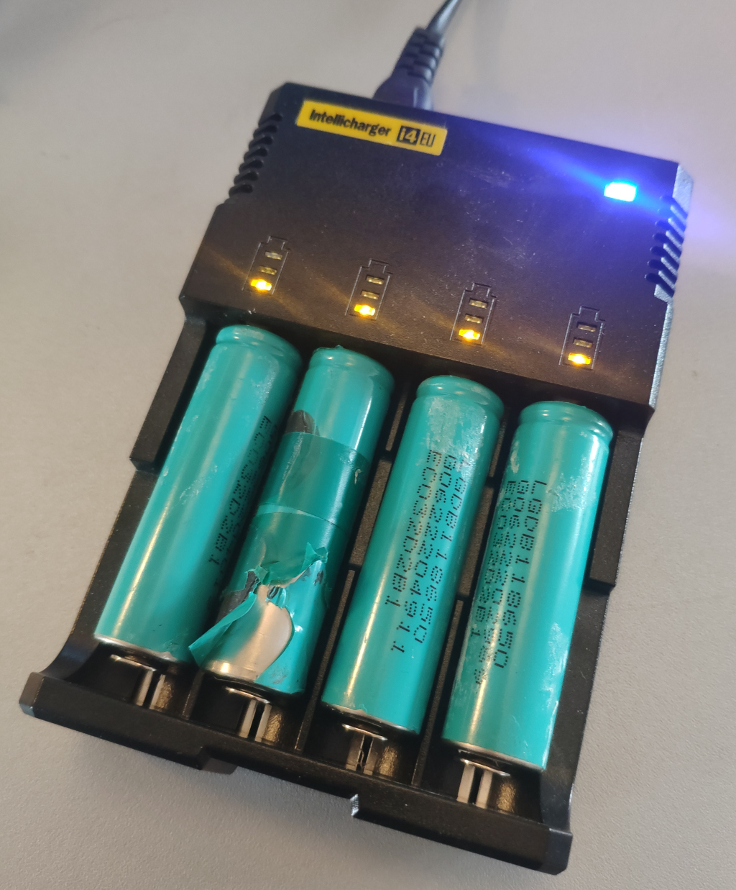

What
In order to accomodate for the Lidar, for which the SLAM algorithms in turn require wheel odometry data and the ESP32-CAM in order to provide a video stream, I had to rework much of the robot from 2018. I repositioned the electronics, swapped the main controller and rewired components to commincate via I2C making the robot more easily extensible.
I found that the "Simultaneous Localization and Mapping" (SLAM) algorithms implemented in the "Robotic Operating System" (ROS) will not function properly without wheel odometry data. Also since transitioning from the ESP8266-based Wemos D1 Mini to an ESP32-CAM that provides more processing power and a camera, I had less I/O pins available. So I took the time to completly overhaul the electronics of the robot to use I2C for control of the actuators and reading of sensors. This greatly simplifies the design and makes debugging issues easier.
Contents
Contents
When
The modified DirtDevil spider robot is a project I’ve only been working on from time to time. There is of course no real use apart from learning any playing and so I frequently have to prioritize other things higher.
Around 2018 when I had the original DirtDevil vacuum robot and decided to modifiy it, I removed all the original electronics and added an L297 motor controller board that was directly connected to the Wemos D1 Mini Wifi-chip.
An lightbarrier was added to detect the front-bumper. This was fed directly into the micro-controller.
Background
Electronics
For the electronics I made some significant changes in order to make the robot easier to maintain and to make it easier to add more sensors and actuators.
Switching to I2C
I realized the electronics would become complicated, when I’d add more sensors and actuators it wouldn’t scale with everything directly connected to the main micro-controller.
The solution here is to have an on-board I2C bus. That way I can read and write bytes by addressable I2C ICs and can have clean wire runs to the main microcontroller. I also won’t run out of I/O pins on the micro-controller and can more easily switch components or debug individual sensors or actuators.
Esp32-Cam for Video
Additionally I wanted a video feed. This is solved in an energy efficient way by switching from the Wemos D1 Mini to the ESP32-Cam. It can control the robot and offer a video stream from a single board that doesn’t consume much energy. Hence I’ll have a much longer battery run time.
Repositioning
So in order to prepare for switching to the I2C components I had to re-arrange the electronics. This began some time in 2024 when I cut the perf boards and glued them down to the CNC milled wooden board.
How
Full electronics build
After soldering all the other sensor and actuator and adding them the board looked like this:
We now have
- an ESP32-CAM in the front as the main micro-controller and camera
- two small 9g servo motors to pan and tilt the camera and micro-controller with it
- an I2C bus bar in the center that is the only connection of the micro-controller to the rest of the electronics
- and a all sensors and actuators connect to that bus bar
The sensors are
- front bumper connected to an I2C gpio expander
- two I2C counters connected to the wheel rotary encoders
- and an I2C compass
For the actuators
- an ULN2003 transistor array connected to the I2C gpio expander for right brush, left brush and vacuum
- and an L297 motor driver board connected to that same I2C gpio expander for directional control of the left and right motors
- a I2C servo control board is on-board as well in order to control the pan and tilt motors of the camera.
For energy
- I’m still using the 18650-cells with a battery protection board inside a small separeted junction box
- the L297 has a 5V 7805-regulator that I’m additionally using for the 5V electornics
In total the electronics now look like this:
BusBar
Note that all sensors and actuators are connected via the same bus-bar in the center. This makes removing, replacing and debugging a lot easier and reduces the number of connections I need to the main ESP32-Cam microcontroller.
For this I just soldered four large pin-arrays to a board keeping two holes distance so that wires can easily be attached and removed without shorting.
The four lanes are for 5V+ Vcc, GNC, I2C SCL and I2C SDA.
With this I can very easily add and remove I2C devices from the bus, measure signals and cleanly wire everything.
Software
The software more or less stayed the same, but was extended.
Control via JSON HTTP-requests
In 2018 I was already able to control the robot via HTTP-Requests.
The software revolves around
- having everything in a key-value store for the state.
- sensors are routinely checked and updated to the store.
- the actuators are routinely aligned to the values in the store.
- the store can be serialized to JSON string and presented via the web server
- and it can be modified by HTTP-POST containing the key and the new value to be given
This gives us the ability to read the state of the robot and control it by simple HTTP requests.
curl http://<robot-ip>/get
{
"uptime": "18",
"compass_x": "65000",
"compass_y": "65000",
"compass_z": "65000",
"bumper": "1",
"motorLeft": "off",
"motorRight": "off",
"wiperLeft": "off",
"wiperRight": "off",
"vacuum": "off",
}
It can be controlled by setting the state on the actuator keys:
curl -d '{ "motorLeft" : "fwd"}' -H "Content-Type: application/json" -X POST http://<robot-ip>/post
curl -d '{ "motorRight" : "fwd"}' -H "Content-Type: application/json" -X POST http://<robot-ip>/post
User Interface
The same Python controller tool I used back then can still be used to drive the robot.

A (currently unfinished) web interface hosted directly from the ESP32-cam can also be used to read sensor data and in future control the robot from any device on the same Wifi network with a web browser.
ROS micro
I gave running ROS micro on the robot serious consideration. This would make integrating wheel odemetry and the Lidar with ROS slam algorithms easier.
The downside is that the robot will not function standalone anymore and I’d be at the mercy of ROS developers regarding compatibility of their APIs.
Instead I chose to keep the robot ROS-free for now. I can still have ROS running on a PC with custom bridges that grab the data from my robots HTTP-REST interface and translate them into ROS packets.
For the Lidar I’ll need to either decode and bundle measurements into JSON or provide a TCP socket on the ESP32-CAM that just relays the serial data from the Lidar via Wifi to the PC and into a custom ROS bridge running there.
It’s not the most convenient setup, but shouldn’t be too hard to acomplish.
Motor, Wiper and Vacuum controls and Bumper sensor via I2C GPIO Expander
Controlling the pcf8574 I2C GPIO expander is quite easy, but drove me crazy at first. I had used the wrong I2C address, because somehow most examples online use 0x20 or 0x40 as a base address. My chip uses 0x38 as it’s base address for reading.
I found this out by adding an I2C scanner snippet found online that just loops over all possible 127 I2C addresses and outputs the ones of devices found on the I2C bus. It’s a nice feature to keep in the software to be able to detect whether I2C devices are properly connected.
Once I had that settled and added two 10k pull-up resistors to SCL and SDA to be safe, it worked fine.
Video Stream and Controls at the same time and the Async Webserver
Streaming video and controlling the robot at the same time with the ESP32-CAM brought some unexpected issues.
The example ESP32-CAM example code for camera streaming uses a continious MJPEG-stream. The issue is that when the ESP32-CAM is busy compressing and responding with the JPEG images it can’t do much else.
On a more powerful system we might solve this with threading, but since the ESP32 has only two cores the benefit would also be limited.
A solution I tried was to use the Async-Webserver Arduino Package [1] for the ESP32. An async webserver is a bit more cleverly engineered in order to accomodate for multiple web requests at the same time. I don’t know if this would have helped here, because the ESP32 is completly 100% busy compressing and responding with images. The Async-Webserver would have to interject handling of other requests in between streaming responses. Perhaps it does.
I gave up on the Async-Webserver tough, because even after patching multiple defines to fix “previously defined” errors [2] and rewriting my web request handler codes for compatibility, I couldn’t figure out how to stream the MJPEG as before. I had also run into heaps of errors regarding the included mbedtls for SSL connections that seems to be incompatible with the ESP32 [3]. I wasn’t intending to use, but couldn’t easily disable it either. After all the patching I was left with possibly unstable broken code I’d have to maintain myself in the future.
My solution now is to have a timer in the *.html-page that simply requests frame by frame. When clicking on a button to control the robot it briefly stops requesting frames in order to give the ESP32 time to handle the control commands instead. The video image will stop briefly, but that doesn’t matter for my use case. Note that I’m only planing to ever have one client at a time connected, but if I did ever need to handle more clients, I could do that as well with a proxy that sits between the robot and the multiple clients. It could briefly block image requests, when control commands are on the way.
Hardware
Apart from electronics changes and software extensions I needed to add additional actuators and sensors.
Camera Pan and Tilt
The main camera on the ESP32-Cam can now be rotated by two small servo motors for pan and tilt.
The motors are simply glued to eachother and onto the perf board of the ESP32-Cam and the small wooden plate connected to the chassis in the front of the robot.
The electronics are simple: a ready-made I2C servo motor controller provides ports for 16 servo motors. This means I have the option to connect more servo motors for other tasks.
I may need to add additional voltage regulators in the future to drive more of them at the same time.
In order to move the servos smoothly I’ll probably add the Arduino ramp library to smoothly accelerate and decellerate the servos [4].
Wheel Odometry
Wheel Odometry proved a bit challenging. I’ll explain the wheel odometry in a follow up (see Wheel Odometry).

Batteries
Originally I had intended to use 18650 cells from an old laptop, as I have in the past. These require a Battery-Protection-Circuit for safety as 18650 cells can potentially catch fire when shorted. This battery protection circuit is causing a lot of trouble. It locks up and just blocks all electicity entirely. Sometimes it resets a day later, sometimes it doesn’t
So instead I put a standard USB power bank on the robot. This worked well enough that I’m considering switching to the powerbank all together. It’s safer and lighter.
In the image below I needed to add a counter-weight - a handle from an older server case - to keep the robot from falling backwards. Some time later I’ve printed some holders to properly fix the battery bank above the rest of the electronics.
The downside with using USB power banks for robots is that, without opening the power back and soldering a wire to the internal battery pack, I won’t be able to get a raw voltage reading from the battery cell in order to determine the charge level. The powerbank only outputs fixed voltages until completely drained. Adding such a wire is feasible though.
In my case I had a power bank that can also output 9V or 12V. This is a requirement to properly drive these motors that would normally run on 14.4V.
The advantage of the power bank approach is that I might be able to wirelessly charge with one of these USB wireless charging smartphone adapters.
That way it would be possible to have a loading bay the robot can drive onto in order to charge. It wouldn’t require being perfectly positioned to charge either. I suspect it would only charge very slowly though.
Progress
Conclusion
I now have a more future-proof hardware and electronics design. It adds the wheel odometry sensors that I need in order to use the Lidar with the SLAM algorithms in ROS. For this I’ve made the decision to keep the robot itself ROS-free, but use the HTTP-JSON interface I already have to connect a custom ROS bridge.
So far I’m in the process of testing the electronics and adjusting the software. So far it looks promising.
1] https://github.com/me-no-dev/ESPAsyncWebServer#body-data-handling 2] https://stackoverflow.com/questions/75043892/i-am-facing-http-get-conflicts-with-a-previous-declaration-error-with-the-wifi 3] https://github.com/me-no-dev/ESPAsyncWebServer/issues/1147 4] https://www.arduino.cc/reference/en/libraries/ramp/